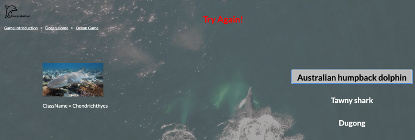
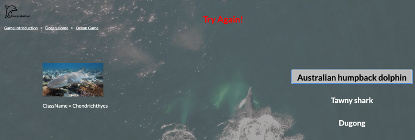

Welcome to My Portfolio Website
Feel free to have a look


Welcome to My Portfolio Website
Feel free to have a look
At first, I planned to create a very cool website to show my personality. I designed a very cool background and planned to use it as the basis for the design. But when I really started editing the content, I found that the background did not match my content. Gradually, I found that I should not let the website design style dominate my content, but should let the content dominate the website style, so I deleted the code and prepared to start from scratch.

This time, I first wrote out the main content of the website, including personal contributions,
reflections, etc. Later, based on this content, I found some great websites on the Internet and compared which
one was more suitable for me. Finally, I chose a design style and began to prepare for creating a website.
The template website on the blackboard of the comprehensive course and several great websites I searched for, and all images and icons
are
all from pixabay. At the same time, in order to make the
website better, I studied Nielsen's Ten Usability Heuristics (Jakob Nielsen, 1994)
to improve the interactive function of the website. I initially determined the style of my website and created
this website in combination with my own content.
Nielsen, J., & Mack, R. L. (1994). Usability inspection methods. Wiley.

Inspiration Design
In this section, we are encouraged to write down a design inspiration for a website, and produce one poster for
our design concept. My inspiration was to design a game to introduce the evolutionary trajectory of common
animals in life, which is pretty interesting but hard to achieve, because it is very hard to find a dataset
which can provide the evolutionary trajectory of common animals in life, and that is also why I didn't take my
project out to participate in the group bidding.
The pictures presented left are the high fidelity of my
design. Although this inspiration did not continue as a team assignment, I learned a
lot from this process, and our team's design is also about animals, which laid a solid foundation for my next
team work (such as the research and use of dataset, etc.)
Finally, we jointly selected one design. This design is an Animal Guessing Game. We complete our original idea
of the website by researching on two similar websites (Guess
the Animal and Animal Sound Quiz). The reason why
we selected this topic is that we want to enhancing users' familiarity with relevant animal habitats and raising
awareness of the current status of animals in different regions.
Structure of Dataset
Because my task is back-end and API, the next
content will mainly focus on the back-end. The structure picture presented left is the structure
of
the dataset we used in our project. That means if we want to retrieve the detailed species data, we need to
retrieve the URL of all levels step by step.
Information for our project in this dataset are all in
Species Level and Species Profile Level. The Species Level of classification records the detailed species
information including conservation status, species environment. It also has a URL linking the resource
describing the species profile under this species. This is also an API of this dataset, which means we
can change the taxonid in the URL to reach the species we need. The fifth level is
the Species Profile level
records the detailed species profile such as the images of the species.
Since my work is mainly back-end
and
API, so
the next content will mainly focus on the JavaScript file of our project.
Our website has 10 HTML files and one load_data.js file is created used for loading the species data we need from the dataset.
All three Game Pages load data through this js file.
We also have a dynamic.js, which is a data loading file for searching the whole
species data from the dataset at the beginning of the design. This file is not used in our website, but we
learned all the dataset information through it and significantly contributed to our later design. And also, we
can extend the function of this website based on this file in the later research.
Tough process of obtaining data
In the
beginning, we created one JS file named dynamic.js to traverse all the data from the
dataset and get the data by the “if” statement. Some asynchronous processes are used here, which is convenient
to read the data at the beginning of the website. But for each step, it needs the data of the previous step,
which means the data cannot be processed at the same time. So here we add the keyword “await” to solve the
problem of data synchronization caused by asynchronous.
Almost all the data loading functions are the
same with the structure. Here is an example of one data loading function, the given function,
loadSpeciesData(index), is a recursive asynchronous function designed to load
species data for specific
families using AJAX calls in JS. Each time, the function will retrieve a URL link
from the previously loaded
data (here is familyData, which stores the family data of each class) and then,
store the current JSON data to
speciesData. The if statement here is used for searching the species that are living
in marine or aquatic, which is used for loading data for ocean habitat.
Even though it can get the data successfully, but sometimes the incorrect image is also stored in speciesData,
since some of the multiple images are stored in the dataset for each species, but some are not images of that
species. There are fewer images of ocean species (only two suitable images), so we need to find other resources
to finish this project. Our original design contained animal sounds, but we later found that we could not find
any sound resources from this dataset, and it was impossible to replace the dataset, so we had to
give up the function of sound. Meanwhile, it needs lots of time for each loading (5 minutes or even longer), so
we changed the search strategy as we cannot let users wait a long time to start the game.
Finally, we choose to store the ID of the species in advance and use the API of the dataset to get
the data we need. As for the lack of pictures of marine animals, we plan to directly store the
connection of the pictures of the corresponding species in load_data.js. The
advantage of this strategy is that
it does not take such a long time and we can get the correct image for each species.
There is only one loading function, which is the loadProfileData() presented left.
Instead of using the
URL link obtained from the previous loading function as the previous method, now we use the API link of the
dataset plus the ID of the species, it will return a json file stores the whole information of that species.
Then we store the data to speciesProfile for the game.
The picture shown on the right is a code snippet of our final project. Due to the use of the built-in API of the
dataset, our function to obtain data has changed from the original 5 to one, and the efficiency of the search
has been greatly improved. At the same time, for species that can't find pictures, we use external library
resources instead of picture resources in the dataset to solve the problem of insufficient pictures. Thanks to
the tutor who gave us suggestions, we finally finished our website on time and moved towards the next
goal.
 

The slider on the right shows the flowchart of our website, and the first picture shows our introduction page,
where users can choose a habitat to play the game. The second picture shows our game page, where users can
choose to answer questions according to the pictures of animals on the left. The last picture shows the
interactive function of the website. When the user chooses the wrong answer, the website will prompt "Try
Again!" in
red font. If the user answers correctly, it will prompt "Correct!" in green font. When the user answers all the
questions, a window will pop up to tell the user that he has answered all the questions and return to the main
page.
After completing the back-end task, my task became much easier. At the end of the project, my team
members and I
completed the final test work and co-wrote the final report and presented it on the trade show. At the end of
the last class, I breathed a sigh of relief, which means that we have completed the task at the beginning of our
course.
Use of The Third Party and Structure
JQuery: The jQuery library is used in the code, which is a fast and concise
JavaScript framework for simplifying HTML document traversal, event processing, animation design and Ajax
interaction. For example, $(document).ready(function() {...}) and $.ajax({...}) in both dynamic.js and load_data.js are all functions provided by jQuery.
Modularization: The code is organized into distinct functional blocks or modules,
such as loading data, refreshing data, and handling button click events. Each module has a specific
responsibility, ensuring a clear and structured codebase.
Asynchronous Programming: Asynchronous features, like async function and await in loadData() function, are employed primarily for loading species information.
Asynchronous programming allows for operations to be executed without waiting for the previous operation to
complete, which is especially valuable when loading substantial amounts of data.
DOM Manipulation: The code frequently carries out operations on DOM elements, such
as setting button text or updating image links.
Call-backs and Promises:
Within the loadProfileData() function, the jQuery $.ajax
method
is combined with Promises to manage asynchronous operations. Utilizing Promises offers a more intuitive approach
to handling the success and failure scenarios of asynchronous operations.
What have I learned?
After nearly ten weeks of hard work, we have gradually finished the guessing game project. Now we can get the
data from the dataset and put it on the interface. For me, I learned how to create an API and use it to retrieve
the data from the dataset and how to deploy a website from local to the internet, how to create a README file
and add it in project (refers GitHub Docs). I also learned how to generate
a website dynamically, which is pretty cool.
This is also the first time I have used GitHub to submit and save my own code. Learning how to use GitHub is
difficult but interesting. From the beginning, I didn't know anything, but later I can use LFS to
submit files accurately. This is not only a training of programming skills, but also an exercise of teamwork,
which is
very important, because in my future work, I need to use Git frequently for teamwork. What I have learned now
is crucial to my future work. The following picture expresses my history progress of creating the web.
Although we achieved the initial goal, there are still some things that we need to focus on, such as how to improve the efficiency of loading data from the dataset, how to minimize the HTML files (because the structure of the game page is quite same, we can use JavaScript to create the HTML file automatically). As you can see, there are still many things that can be improved on this website.
Contribution
For 2A and 2B, the contributions are talked above.
For 2C, I made the research and started creating the API of the web. In this process, I created dynamic.js. For 2D, I finished the part of the Web API. In this process, I finished the
data loading function of ocean page and created load_data.js. For 2E, I finished the back-end of the project, and finished the working system part of the report.
Future Directions
As I said before, there are still many things that can be improved in this project, one of which I most want to
do is to improve dynamic.js so that I can use this file to load data, because I hope to judge directly in this
file instead of finding out which species are suitable for our project in advance. This requires me to optimize
the search process and improve the efficiency of the algorithm. Although it is difficult, I believe it can still
be done.
For this portfolio website, in addition to beautifying the interface, I also want to add a button function to
the far right of the navigation bar. I designed it but I don't have time to finish it. This button is used to
jump to my previous project because this website is published on the Internet, and I hope to make this website
my own blog website for later job hunting.
Conclusion
Through this project, I learned how to design and deploy a website from beginning to end. In the process, I
improved my code ability and learned how to use Github for teamwork. Now, it's time to say goodbye to this
project, but the story keeps going. I hope to continue to create interesting websites with friends on the road
to future learning.
"Dare to dream, then make it your reality."
Thank you for visiting